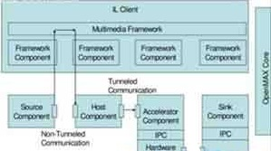

Android OpenMax多媒体引擎（二）
其主要实现了OpenMax IL中的各个组件(Component)。对下层，OpenMax IL可以调用OpenMax DL层的接口，也可以直接调用各种Codec实现。对上层，OpenMax IL可以给OpenMax AL层等框架层(Middleware)调用，也可以给应用程序直接调用。
OpenMax IL主要内容如下所示。
客户端(Client)：OpenMax IL的调用者。组件(Component)：OpenMax IL的单元，每一个组件实现一种功能。
端口(Port)：组件的输入输出接口。
隧道化(Tunneled)：让两个组件直接连接的方式。

OpenMAL IL的客户端，通过调用四个OpenMAL IL组件，实现了一个功能。四个组件分别是Source组件、Host组件、Accelerator组件和Sink组件。Source组件只有一个输出端口;而Host组件有一个输入端口和一个输出端口;Accelerator组件具有一个输入端口，调用了硬件的编解码器，加速主要体现在这个环节上。Accelerator组件和Sink组件通过私有通讯方式在内部进行连接，没有经过明确的组件端口。
OpenMAL IL在使用的时候，其数据流也有不同的处理方式：既可以经由客户端，也可以不经由客户端。Source组件到Host组件的数据流就是经过客户端的;而Host组件到Accelerator组件的数据流就没有经过客户端，使用了隧道化的方式;Accelerator组件和Sink组件甚至可以使用私有的通讯方式。
OpenMax Core是辅助各个组件运行的部分，它通常需要完成各个组件的初始化等工作，在真正运行过程中，重点的是各个OpenMax IL的组件，OpenMax Core不是重点，也不是标准。
OpenMAL IL的组件是OpenMax IL实现的核心内容，一个组件以输入、输出端口为接口，端口可以被连接到另一个组件上。外部对组件可以发送命令，还进行设置/获取参数、配置等内容。组件的端口可以包含缓冲区(Buffer)的队列。
组件的处理的核心内容是：通过输入端口消耗Buffer，通过输出端口填充Buffer，由此多组件相联接可以构成流式的处理。
组件的功能和其定义的端口类型密切相关，通常情况下：只有一个输出端口的，为Source组件;只有一个输入端口的，为Sink组件;有多个输入端口，一个输出端口的为Mux组件;有一个输入端口，多个输出端口的为DeMux组件;输入输出端口各一个组件的为中间处理环节，这是最常见的组件。
端口具体支持的数据也有不同的类型。例如，对于一个输入、输出端口各一个组件，其输入端口使用MP3格式的数据，输出端口使用PCM格式的数据，那么这个组件就是一个MP3解码组件。
隧道化(Tunneled)是一个关于组件连接方式的概念。通过隧道化可以将不同的组件的一个输入端口和一个输出端口连接到一起，在这种情况下，两个组件的处理过程合并，共同处理。尤其对于单输入和单输出的组件，两个组件将作为类似一个使用。